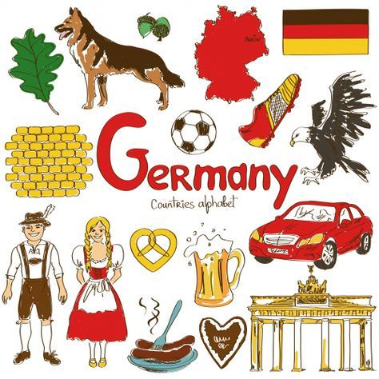
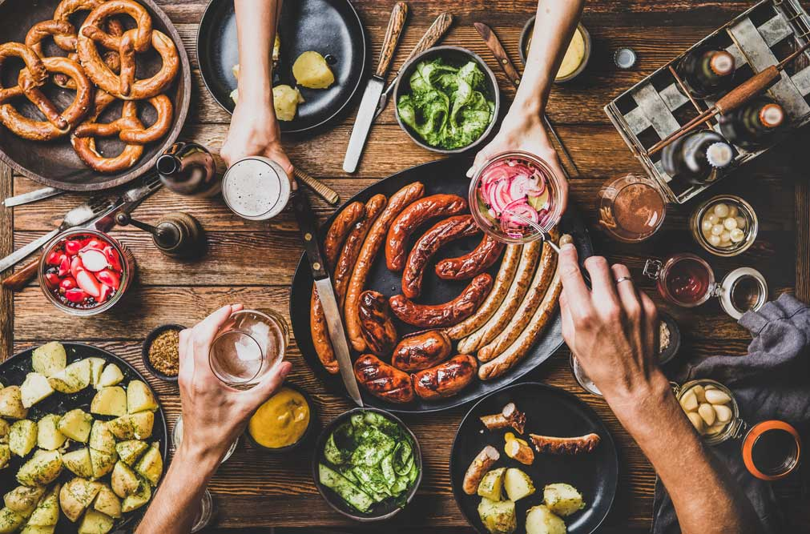
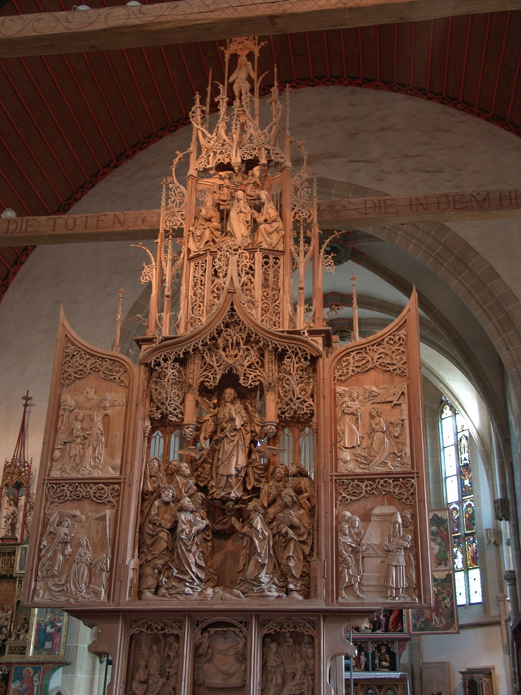

India

AR/VR
Germany is known for its contributions to philosophy, music, literature, and engineering. Its culture emphasizes precision, efficiency, and tradition.
Germany is famous for Oktoberfest, Christmas markets, and Carnival. These festivals showcase local crafts, cuisine, and folk traditions.

German food includes sausages, pretzels, schnitzel, and hearty stews. Beer and bread culture are significant in daily life.
Germany has been a leader in classical music (Beethoven, Bach), architecture (Bauhaus), and automotive design with brands like BMW and Mercedes-Benz.
 ← Back to Home